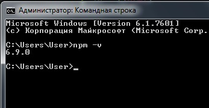

Заходим на сайт NODEJC.ORG
Скачиваем программу. Установка тривиальная
После того как установилась программа запускаем коммандную строку от имени администратора и вводим команду
npm -v
В коммандной строке вводим такой код:
npm install -g browser-sync
После установки выйдет уведомление что установлено столько-то пакетов
Теперь открываем папку с проектом и зажимая клавишу Shift щелкаем ПКМ по пустому месту в папке. Откроется меню и там выбираем "Открыть окно команд"
Теперь необходимо в коммандной строке ввести следующую команду:
browser-sync start --server --files "*.html"
После чего выведется уведомление о запуске локального сервера и откроется браузер с нашей страницей index.html
ВАЖНО!! - в папке обязательно должен быть файл index.html
Если зайти по адресу: http://localhost:3001 - то мы попадем в панель администрирования Browser Sunc
В панель Overview мы можем посмотреть как с помощью WiFi мы сможем попасть на наш сайт:
Т.е. просто вводим в браузере телефона этот адрес.
Во вкладке Sync Options мы указываем что надо синхронизировать.
Во вкладке Network Throttle мы можем симитировать низкую скорость интернета и посмотреть как будет открываться наш сайт.